|
 |
| ГЕМЛИБРА® (GEMLIBRA) emicizumab раствор для п/к введения | ||||||||||||||||||||||||||||||||||||||||||||||||
|
Клинико-фармакологическая группа: Моноклональные антитела. Гемостатический препарат Номер и дата регистрации: ЛП-005110 от 15.10.18 Код ATX: B02BX06 |
Владелец регистрационного удостоверения: зарегистрировано Представительство: | |||||||||||||||||||||||||||||||||||||||||||||||
Форма выпуска, состав и упаковка Раствор для подкожного введения в виде прозрачной или опалесцирующей, от бесцветного до желтоватого цвета жидкости.
Вспомогательные вещества: L-гистидин - 3.1 мг, L-аспарагиновая кислота - до рН 6.0, L-аргинин - 26.1 мг, полоксамер 188 - 0.5 мг, вода д/и - до 1 мл. 1 мл - флаконы бесцветного стекла (1) - пачки картонные×. Раствор для подкожного введения в виде прозрачной или опалесцирующей, от бесцветного до желтоватого цвета жидкости.
Вспомогательные вещества: L-гистидин - 1.2 мг, L-аспарагиновая кислота - до рН 6.0, L-аргинин - 10.5 мг, полоксамер 188 - 0.2 мг, вода д/и - до 0.4 мл. 0.4 мл - флаконы бесцветного стекла (1) - пачки картонные×. Раствор для подкожного введения в виде прозрачной или опалесцирующей, от бесцветного до желтоватого цвета жидкости.
Вспомогательные вещества: L-гистидин - 2.2 мг, L-аспарагиновая кислота - до рН 6.0, L-аргинин - 18.3 мг, полоксамер 188 - 0.4 мг, вода д/и - до 0.7 мл. 0.7 мл - флаконы бесцветного стекла (1) - пачки картонные×. Раствор для подкожного введения в виде прозрачной или опалесцирующей, от бесцветного до желтоватого цвета жидкости.
Вспомогательные вещества: L-гистидин - 3.1 мг, L-аспарагиновая кислота - до рН 6.0, L-аргинин - 26.1 мг, полоксамер 188 - 0.5 мг, вода д/и - до 1 мл. 1 мл - флаконы бесцветного стекла (1) - пачки картонные×. × С целью контроля первого вскрытия на упаковку наносится защитная голографическая наклейка. | ||||||||||||||||||||||||||||||||||||||||||||||||
| ||||||||||||||||||||||||||||||||||||||||||||||||
Описание препарата основано на официально утвержденной инструкции по применению и утверждено компанией-производителем для издания 2022 г. | ||||||||||||||||||||||||||||||||||||||||||||||||
Фармакологическое действие |
Фармакокинетика |
Показания |
Режим дозирования |
Побочное действие |
Противопоказания |
Беременность и лактация |
Особые указания |
Передозировка |
Лекарственное взаимодействие |
Условия хранения и сроки годности |
Условия реализации
Фармакологическое действие
Механизм действия Эмицизумаб представляет собой биспецифичные гуманизированные моноклональные антитела на основе иммуноглобулина G4 (IgG4), продуцируемые клетками яичников китайского хомячка по технологии рекомбинантной ДНК. Эмицизумаб связывает активированный фактор IX с фактором X для восполнения функции отсутствующего активированного фактора VIII, который необходим для эффективного гемостаза. Эмицизумаб не имеет структурного сходства или гомологичных последовательностей с фактором VIII (FVIII) и, соответственно, не индуцирует, и не усиливает образование прямых ингибиторов FVIII. Гемофилия А - это сцепленное с Х-хромосомой наследственное нарушение свертывания крови вследствие функционального дефицита FVIII, что приводит к кровоизлияниям в суставы, мышцы или внутренние органы, спонтанным или при случайных травмах, а также хирургических вмешательствах. Профилактика препаратом Гемлибра® укорачивает АЧТВ и увеличивает показатель активности FVIII, определяемый по хромогенному методу с использованием других человеческих факторов свертывания. Данные фармакодинамические маркеры не отражают истинный гемостатический эффект эмицизумаба in vivo (АЧТВ чрезмерно укорочено, показатель активности FVIII может быть завышен), однако они указывают на наличие у эмицизумаба прокоагулянтного эффекта. Иммуногенность При применении препарата Гемлибра® возможно развитие иммунного ответа. Согласно объединенным данным клинических исследований III фазы у 668 пациентов проводили анализ на наличие антител к эмицизумабу, при этом у 34 (5.1%) пациентов результат был положительным. У 18 (2.7%) пациентов антитела к эмицизумабу были нейтрализующими в условиях in vitro. У 14 из этих пациентов нейтрализующие антитела к эмицизумабу не оказывали клинически значимого влияния на фармакокинетику или эффективность препарата Гемлибра®, при этом у 4 (0.6%) пациентов отмечалось снижение концентрации эмицизумаба. У 1 (0.2%) пациента с нейтрализующими антителами к эмицизумабу и одновременным снижением концентрации эмицизумаба наблюдалась потеря эффективности после 5 недель терапии препаратом Гемлибра®. Данный пациент прекратил лечение препаратом Гемлибра®. В целом профиль безопасности препарата Гемлибра® у пациентов с антителами к эмицизумабу (в т.ч. нейтрализующими) соответствовал таковому у пациентов без антител к эмицизумабу (см. разделы "Побочное действие" и "Особые указания"). Результаты анализа иммуногенности, в частности, количество пациентов с положительным результатом ИФА на антитела к эмицизумабу (ELISA), и/или хромогенного анализа активности FVIII на нейтрализующие антитела к эмицизумабу могут зависеть от различных факторов, таких как чувствительность и специфичность анализа, манипуляции с забранными образцами, время забора образцов, сопутствующие препараты и характер основного заболевания. Исходя из этих соображений, сравнение частоты обнаружения антител к эмицизумабу и частоты обнаружения антител к другим биологическим препаратам может оказаться неинформативным. Доклинические данные по безопасности Доклинические исследования не выявили специфических рисков для человека. Канцерогенность, генотоксичность, репродуктивная токсичность Не изучались. Влияние на фертильность Эмицизумаб не вызывал каких-либо токсикологических изменений в репродуктивных органах самцов и самок яванских макак при п/к введении в дозе до 30 мг/кг/неделю продолжительностью до 26 недель, а также при в/в введении в дозах до 100 мг/кг/неделю в течение 4 недель. Прочее Уровни цитокинов, высвобождающихся под действием эмицизумаба были аналогичны таковым для других антител, обладающих низким риском индукции цитокинов, в исследовании in vitro с использованием цельной крови здоровых взрослых добровольцев. Фармакокинетика
Фармакокинетику эмицизумаба определяли посредством некомпартментного анализа данных, полученных у здоровых добровольцев, и популяционного фармакокинетического анализа данных, полученных у пациентов с гемофилией А. Всасывание Период полувсасывания после п/к введения препарата пациентам с гемофилией А составил 1.6 дней. Средние (± стандартное отклонение (СО)) минимальные концентрации эмицизумаба в плазме достигали значений 52.6±13.6 мкг/мл на 5-й неделе после многократных п/к инъекций препарата в дозе 3 мг/кг 1 раз в неделю пациентам с гемофилией А. Устойчивые средние минимальные концентрации эмицизумаба в плазме в равновесном состоянии составляли 51.2 мкг/мл, 46.9 мкг/мл и 38.5 мкг/мл при применении препарата в поддерживающей дозе 1.5 мг/кг 1 раз в неделю, 3 мг/кг 1 раз в 2 недели или 6 мг/кг 1 раз в 4 недели, соответственно (см. рисунок 1 и таблицу 1). 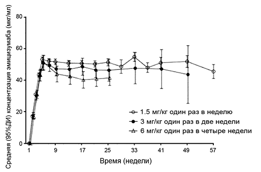 Рис. 1. Средние (±95% доверительный интервал) минимальные концентрации эмицизумаба в плазме при применении поддерживающих доз препарата Средние (±СО) минимальная концентрация (Ctrough), Cmax и отношение Cmax/Ctrough в равновесном состоянии при применении рекомендуемых поддерживающих доз 1.5 мг/кг 1 раз в неделю, 3 мг/кг 1 раз в 2 недели и 6 мг/кг 1 раз в 4 недели представлены в таблице 1. Таблица 1. Средние (±СО) концентрации эмицизумаба в равновесном состоянии
Cavg,ss = средняя концентрация в равновесном состоянии. Cmax,ss = максимальная концентрация в плазме в равновесном состоянии. Ctrough, ss = минимальная концентрация в равновесном состоянии. Фармакокинетические параметры получены из популяционной фармакокинетической модели. У пациентов ≥12 лет (взрослые/подростки) и <12 лет (дети) после применения препарата в дозе 3 мг/кг 1 раз в неделю в течение 4 недель, а затем в поддерживающей дозе 1.5 мг/кг 1 раз в неделю наблюдались сходные профили фармакокинетики (см. рис. 2). 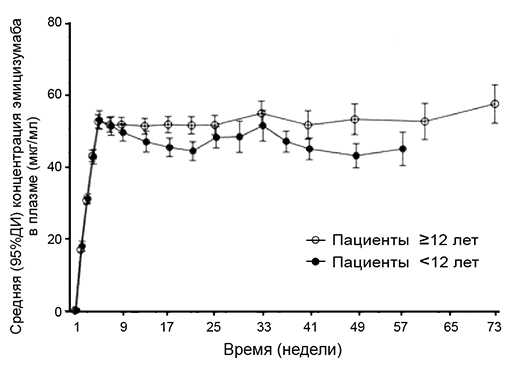 Рис. 2. Средние концентрации эмицизумаба в плазме в зависимости от времени у пациентов ≥12 лет по сравнению с пациентами <12 лет в клинических исследованиях У здоровых добровольцев абсолютная биодоступность после п/к введения препарата в дозе 1 мг/кг варьировала от 80.4% до 93.1% в зависимости от места введения. Профили фармакокинетики после п/к введения эмицизумаба в область живота, верхнюю часть наружной поверхности плеча и бедро были сходными. Препарат можно вводить поочередно в указанные области. Распределение После однократного в/в введения эмицизумаба в дозе 0.25 мг/кг здоровым добровольцам Vd в равновесном состоянии составил 106 мл/кг (т.е. 7.4 л для взрослого человека с массой тела 70 кг). Препарат не предназначен для в/в введения. У пациентов с гемофилией А после многократных п/к инъекций кажущийся Vd, рассчитанный согласно данным популяционного фармакокинетического анализа, составил 10.4 л. Линейность дозы. Эмицизумаб демонстрировал пропорциональную дозе фармакокинетику у пациентов с гемофилией А при п/к введении в диапазоне доз 0.3-6 мг/кг 1 раз в неделю. Метаболизм Метаболизм эмицизумаба не изучался. Антитела IgG преимущественно подвергаются катаболизму путем лизосомального протеолиза, затем продукты распада антител (аминокислоты) выводятся или используются организмом. Выведение После в/в введения эмицизумаба в дозе 0.25 мг/кг здоровым добровольцам общий клиренс составил 3.26 мл/кг/сут (т.е. 0.228 л/сут у взрослого с массой тела 70 кг); средний Т1/2 - 26.7 дней. После однократного п/к введения здоровым добровольцам Т1/2 составлял примерно 4-5 недель. После многократных п/к инъекций препарата пациентам с гемофилией А кажущийся клиренс составил 0.271 л/сут, кажущийся Т1/2 - 26.9 дней. Фармакокинетика у пациентов особых групп Пациенты с нарушением функции почек. Безопасность и эффективность препарата Гемлибра® у пациентов с нарушением функции почек отдельно не изучались. Доступные данные по применению препарата Гемлибра® у пациентов с нарушением функции почек легкой и средней степени тяжести ограничены. Данные по применению препарата Гемлибра® у пациентов с нарушением функции почек тяжелой степени отсутствуют. Препарат Гемлибра® представляет собой моноклональное антитело и выводится из организма путем катаболизма, а не почками. Специальных исследований по изучению влияния нарушения функции почек на фармакокинетику эмицизумаба не проводилось. Большинство пациентов с гемофилией А, вошедших в популяционный анализ фармакокинетики, имели нормальную функцию почек (КК ≥90 мл/мин) или нарушение функции почек легкой степени тяжести (КК 60-89 мл/мин). Только у двух пациентов было нарушение функции почек средней степени тяжести (КК 30-59 мл/мин). Ни у одного пациента не было нарушения функции почек тяжелой степени. Нарушение функции почек легкой или средней степени тяжести не оказывало влияния на фармакокинетику эмицизумаба. Таким образом, считается, что изменение дозы у пациентов с нарушением функции почек не потребуется. Пациенты с нарушением функции печени. Безопасность и эффективность препарата Гемлибра® у пациентов с нарушением функции печени отдельно не изучались. Пациенты с нарушением функции печени легкой и средней степени тяжести принимали участие в клинических исследованиях. Данные по применению препарата Гемлибра® у пациентов с нарушением функции печени тяжелой степени отсутствуют. Препарат Гемлибра® представляет собой моноклональное антитело и выводится из организма путем катаболизма, а не путем печеночного метаболизма. Специальных исследований по изучению влияния нарушения функции печени на фармакокинетику эмицизумаба не проводилось. Большинство пациентов с гемофилией А, вошедших в популяционный анализ фармакокинетики, имели нормальную функцию печени (билирубин и ACT ≤ ВГН) или нарушение функции печени легкой степени тяжести (билирубин ≤ВГН и ACT >ВГН или билирубин <1.0-1.5 × ВГН и любая активность ACT). Только у шести пациентов было нарушение функции печени средней степени тяжести (1.5 × ВГН <билирубин ≤3 × ВГН и любая активность ACT). Нарушение функции печени легкой или средней степени тяжести не оказывало влияния на фармакокинетику эмицизумаба. Нарушение функции печени определяли согласно критериям Национального Института Онкологии для дисфункции печени. Таким образом, считается, что изменение дозы у пациентов с нарушением функции печени не потребуется. Пациенты детского возраста. Влияние возраста на фармакокинетику эмицизумаба оценивали в популяционном фармакокинетическом анализе у младенцев (от ≥1 месяца до <2 лет), детей (от ≥2 до <12 лет) и подростков (от 12 до <18 лет) с гемофилией А. Возраст не оказывал влияния на фармакокинетику эмицизумаба. Пациенты пожилого возраста. Влияние возраста на фармакокинетику эмицизумаба оценивали в популяционном фармакокинетическом анализе, включавшего пациентов ≥65-<77 лет. Относительная биодоступность препарата снижалась с увеличением возраста, однако клинически значимых различий в фармакокинетике эмицизумаба у пациентов <65 лет и пациентов ≥65 лет не отмечалось. Безопасность и эффективность применения препарата Гемлибра® у пожилых пациентов отдельно не изучались. Клинические исследования препарата Гемлибра® включали пациентов в возрасте ≥65 лет. Раса. Популяционный фармакокинетический анализ у пациентов с гемофилией А показал, что раса не влияет на фармакокинетику эмицизумаба. Показания
В качестве рутинной профилактики для предотвращения или снижения частоты кровотечений у пациентов с:
Режим дозирования
Терапию следует начинать под наблюдением врача, имеющего опыт в лечении гемофилии и/или нарушений свертываемости крови. Лечение препаратами с шунтирующим механизмом действия (bypassing agents) следует прекратить за день до начала терапии препаратом Гемлибра®. Профилактику фактором VIII можно продолжать в течение первых 7 дней терапии препаратом Гемлибра®. Рекомендуемый режим дозирования Рекомендуемая доза составляет 3 мг/кг в виде п/к инъекции 1 раз в неделю в течение первых 4 недель, затем препарат вводят в поддерживающей дозе:
Поддерживающую дозу следует выбирать на основании предпочтений врача и пациента/лица, осуществляющего уход за пациентом, для обеспечения приверженности выбранному режиму терапии. Способ применения Препарат Гемлибра® предназначен только для п/к введения. Препарат следует вводить с соблюдением надлежащих правил асептики. Выбор места для инъекции следует ограничить рекомендованными участками: область живота, верхняя часть наружной поверхности плеча и бедро. Данные об инъекциях в другие участки тела отсутствуют. П/к инъекции препарата Гемлибра® в верхнюю часть наружной поверхности плеча должны выполняться лицом, осуществляющим уход за пациентом, или медицинским работником. Чередование мест инъекций может помочь предотвратить или уменьшить реакции в месте введения. Не следует вводить препарат Гемлибра® в родимые пятна, ткани рубцов, гематомы, в места с уплотнением или повреждением, в участки с чувствительной кожей, покраснением. Препарат Гемлибра® и другие препараты, также предназначенные для п/к введения, предпочтительно вводить в разные анатомические области. Введение препарата пациентом и/или лицом, осуществляющим уход за пациентом Препарат Гемлибра® предназначен для применения под руководством медицинского работника. После надлежащего обучения технике п/к инъекций пациент может вводить препарат Гемлибра® самостоятельно. По усмотрению лечащего врача препарат Гемлибра® может вводиться лицом, осуществляющим уход за пациентом. Лечащий врач и лицо, осуществляющее уход за пациентом, должны оценить возможность самостоятельного введения препарата Гемлибра® ребенком. Однако самостоятельное введение препарата детьми в возрасте до 7 лет не рекомендовано. Продолжительность лечения Препарат Гемлибра® предназначен для долгосрочной профилактики. Коррекция дозы Коррекция дозы препарата Гемлибра® не рекомендуется. Задержка приема или пропуск дозы Если пациент пропустил плановую п/к инъекцию препарата Гемлибра®, его следует проинструктировать ввести пропущенную дозу как можно скорее, до дня введения очередной плановой дозы. Затем пациенту следует ввести следующую дозу в обычный запланированный день введения. Пациент не должен получать две дозы в один день для восполнения пропущенной дозы. Дозирование в особых случаях Коррекция дозы у пациентов детского возраста не требуется. Коррекция дозы у пациентов пожилого возраста (≥65 лет) не требуется. Коррекция дозы у пациентов с нарушением функции почек и пациентов с нарушением функции печени не требуется. Обращение с препаратом Препарат Гемлибра® представляет собой стерильный, не содержащий консервантов, готовый к использованию и не требующий разведения раствор для п/к введения, от бесцветного до бледно-желтого цвета. Перед введением следует визуально проверить раствор на предмет механических включений и изменения окраски. При наличии видимых механических включений или изменении окраски препарат нельзя использовать и необходимо утилизировать. Флаконы препарата Гемлибра® в лекарственной форме раствор для п/к введения предназначены только для однократного применения. Препарат Гемлибра® следует хранить в холодильнике (2-8°С). После извлечения из холодильника невскрытые флаконы можно хранить при комнатной температуре (ниже 30°С) не более 7 дней. После хранения при комнатной температуре невскрытые флаконы могут быть снова помещены в холодильник. Общее суммарное время хранения препарата при комнатной температуре не должно превышать 7 дней. Руководство по использованию препарата Для извлечения препарата Гемлибра® из флакона и его п/к введения необходимы шприц, игла для переноса, инъекционная игла, которые отвечают следующим критериям. Шприц 1 мл Прозрачный полипропиленовый или поликарбонатный, одноразовый, инъекционный, безлатексный, апирогенный, стерильный шприц с канюлей Луер-Лок (в случае, если шприц с канюлей Луер-Лок недоступен, может быть использован шприц с канюлей Луер-Слип) и градуировкой 0.01 мл. Шприц 2-3 мл Прозрачный полипропиленовый или поликарбонатный, одноразовый, инъекционный, безлатексный, апирогенный, стерильный шприц с канюлей Луер-Лок (в случае, если шприц с канюлей Луер-Лок недоступен, может быть использован шприц с канюлей Луер-Слип) и градуировкой 0.1 мл. Игла для переноса Стерильная, безлатексная, апирогенная, одноразовая игла из нержавеющей стали с соединением Луер-Лок (в случае, если игла с соединением Луер-Лок недоступна, может быть использована игла с соединением Луер-Слип) калибра 18G, с длиной 26 мм (1'')-40 мм (1.5''). Инъекционная игла Стерильная, безлатексная, апирогенная, одноразовая игла из нержавеющей стали с соединением Луер-Лок (в случае, если игла с соединением Луер-Лок недоступна, может быть использована игла с соединением Луер-Слип) калибра 26G (приемлемый диапазон: 25-27G), с длиной 9 мм (3/8'') (предпочтительно) или 13 мм (1/2'') (максимально), с предохранителем (предпочтительно) или без него. Для введения препарата объемом ≤1 мл следует использовать Шприц 1 мл, для введения препарата объемом >1 мл и ≤2 мл следует использовать Шприц 2-3 мл. Не следует вводить объем препарата >2 мл за одну инъекцию. Если для введения назначенной дозы требуется извлечение препарата из нескольких флаконов в один шприц, см. информацию ниже (подраздел "Объединение флаконов"). Нельзя объединять флаконы, содержащие препарат в разной концентрации, в один шприц. После переноса из флакона в шприц лекарственный препарат следует использовать немедленно, т.к. он не содержит антимикробных консервантов. Подготовка к использованию препарата 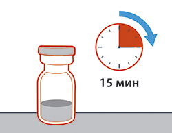
Выбор и подготовка места инъекции 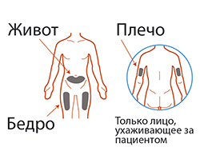
Инъекции рекомендуется производить:
Необходимо каждый раз менять место инъекции (при проведении инъекции рекомендуется отступать не менее чем на 2.5 см от области предыдущей инъекции). Следует избегать участков, которые могут подвергаться раздражению ремнем или поясом одежды. Не следует вводить препарат в родимые пятна, ткани рубцов, гематомы, в места с уплотнением, повреждением, в участки с чувствительной кожей, покраснением. Важная информация об обращении со шприцем
Важная информация после инъекции
Подготовка к введению препарата Шаг 1. Снятие колпачка и очистка верхней части флакона 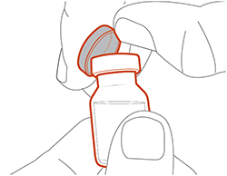
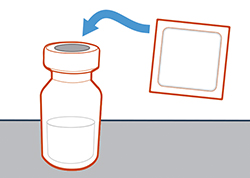
Шаг 2. Присоединение иглы для переноса к шприцу* 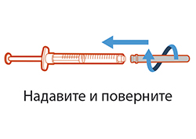
* Здесь и далее на рисунках представлены шприц и иглы с соединением Луер-Лок. Однако, если шприц и/или иглы с соединением Луер-Лок недоступны, могут быть использованы шприц и/или иглы с соединением Луер-Слип. В случае использования шприца и/или игл с соединением Луер-Слип также см. соответствующие инструкции по применению, разработанные производителями, в отношении особенностей присоединения/отсоединения таких медицинских изделий. 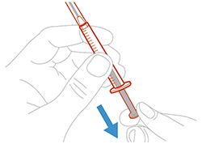
Шаг 3. Снятие колпачка с иглы для переноса 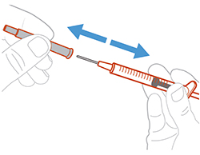
Шаг 4. Введение воздуха во флакон 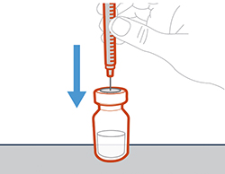
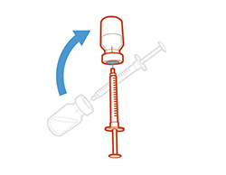
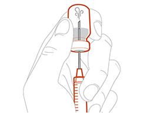
Шаг 5. Перенос препарата в шприц 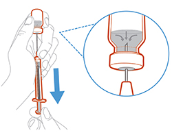
Важно! Если объем назначенной дозы больше объема препарата во флаконе следует извлечь весь раствор из флакона (см. подраздел "Объединение флаконов"). Шаг 6. Удаление пузырьков воздуха 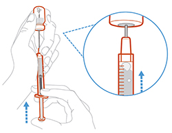 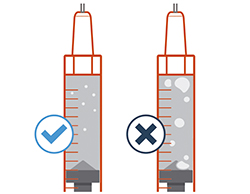
Примечание: Необходимо убедиться, что набрано достаточное количество препарата в шприц для получения назначенной дозы, перед тем, как перейти к следующему шагу. Если не удается извлечь раствор из флакона полностью, следует перевернуть флакон вертикально, чтобы набрать оставшееся количество. Нельзя использовать иглу для переноса, чтобы сделать инъекцию, т.к. это может нанести вред, а именно, привести к возникновению кровотечения и боли. Введение препарата Шаг 7. Закрытие колпачка на игле для переноса 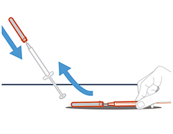
Шаг 8. Обработка места инъекции
Шаг 9. Удаление иглы для переноса
Шаг 10. Присоединение инъекционной иглы** к шприцу 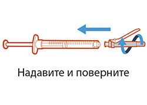
** Здесь и далее на рисунках представлена инъекционная игла с предохранителем. Однако также допускается применение инъекционной иглы без предохранителя. В случае использования иглы без предохранителя также см. соответствующую инструкцию по применению, разработанную производителем, в отношении особенностей обращения с такой иглой. Шаг 11. Смещение предохранителя с инъекционной иглы 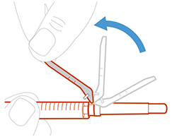
Шаг 12. Снятие колпачка с инъекционной иглы 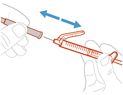
Шаг 13. Регулировка положения поршня до назначенной дозы 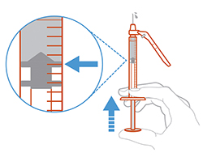
Шаг 14. Подкожная инъекция 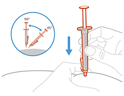
Шаг 15. Введение препарата 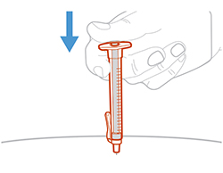
Шаг 16. Закрытие инъекционной иглы предохранителем 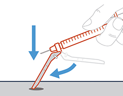
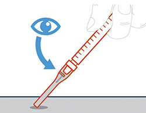
Шаг 17. Утилизация шприца и иглы 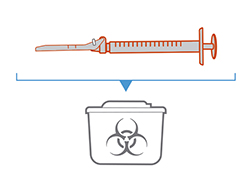
Важно: следует всегда хранить защищенный от проколов контейнер в недоступном для детей месте. Объединение флаконов Если необходимо использовать более 1 флакона для получения назначенной дозы, см. нижеперечисленные шаги после извлечения препарата из первого флакона. Шаг А. Закрытие колпачка на игле для переноса
Шаг Б. Удаление иглы для переноса 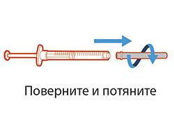
Шаг В. Присоединение новой иглы для переноса к шприцу Примечание: Необходимо использовать новую иглу для переноса каждый раз при извлечении раствора из нового флакона.
Шаг Г. Снятие колпачка с иглы для переноса 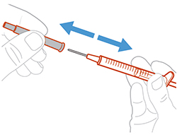
Шаг Д. Введение воздуха во флакон
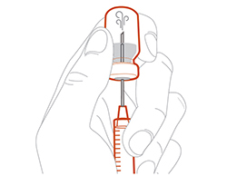
Шаг Е. Перенос препарата в шприц
Примечание: Следует убедиться, что набрано достаточное количество препарата в шприц для получения назначенной дозы, перед тем, как перейти к следующему шагу. Если не удается извлечь раствор из флакона полностью, следует перевернуть флакон вертикально, чтобы набрать оставшееся количество. Нельзя использовать иглу для переноса, чтобы сделать инъекцию, т.к. это может нанести вред, а именно, привести к возникновению кровотечения и боли. Следует повторять шаги А-Е с каждым дополнительным флаконом до тех пор, пока в шприц не будет набран объем препарата больше объема назначенной дозы. После этого, не вынимая иглу для переноса из флакона, следует вернуться к шагу 6 и завершить оставшиеся шаги. Рекомендации по утилизации Все использованные шприцы, флаконы, иглы, колпачки от флаконов и инъекционных игл должны быть помещены в защищенный от проколов контейнер сразу после использования. Иглы и шприцы нельзя использовать повторно. Не следует утилизировать открытые иглы и шприцы с бытовыми отходами. Если защищенный от проколов контейнер недоступен, можно использовать контейнер для сбора твердых бытовых отходов, который:
Когда защищенный от проколов контейнер практически заполнен, необходимо следовать локальным правилам для корректной утилизации такого контейнера. Нельзя помещать использованный контейнер для острых предметов в бытовые отходы, за исключением случаев, когда это допустимо по локальным правилам. Нельзя подвергать использованный контейнер для острых предметов переработке. Побочное действие
Профиль безопасности оценен исходя из объединенных данных клинических исследований профилактики препаратом Гемлибра® у взрослых (≥18 лет), подростков (от ≥12 лет до <18 лет), детей (от ≥2 лет до <12 лет) и младенцев (от ≥1 месяца до <2 лет) мужского пола с гемофилией А. Медиана длительности применения препарата составляла 34.1 недели (0.1-94.3 недели). У 0.8% пациентов лечение препаратом Гемлибра® было прекращено вследствие нежелательных реакций, а именно тромботической микроангиопатии, некроза кожи с одновременным тромбофлебитом поверхностных вен, а также головной боли. Нежелательные реакции сгруппированы в соответствии с классами систем органов медицинского словаря для нормативно-правовой деятельности MedDRA. Для описания частоты нежелательных реакций используется следующая классификация: очень часто (≥10%), часто (≥1% и <10%), нечасто (≥0.1% и <1%). Инфекционные и паразитарные заболевания: нечасто - тромбоз кавернозного синуса. Со стороны крови и лимфатической системы: нечасто - тромботическая микроангиопатия. Со стороны нервной системы: очень часто - головная боль. Со стороны сердечно-сосудистой системы: нечасто - тромбофлебит поверхностных вен. Со стороны ЖКТ: часто - диарея. Со стороны кожи и подкожных тканей: нечасто - некроз кожи. Со стороны костно-мышечной системы: очень часто - артралгия; часто - миалгия. Общие расстройства и нарушения в месте введения: очень часто - реакции в месте введения; часто - пирексия. Описание отдельных нежелательных реакций Наиболее серьезными нежелательными реакциями, которые наблюдались в клинических исследованиях препарата Гемлибра®, были тромботическая микроангиопатия (ТМА) и тромботические явления, в т.ч. тромбоз кавернозного синуса и тромбофлебит поверхностных вен с одновременным некрозом кожи. Тромботическая микроангиопатия ТМА наблюдалась у <1% пациентов и у 9.7% пациентов, получивших, как минимум, одну дозу аКПК в клинических исследованиях. Отмечалось, что каждый из этих пациентов перед развитием явлений ТМА (проявляющихся в виде тромбоцитопении, микроангиопатической гемолитической анемии и острого повреждения почек при отсутствии тяжелого дефицита активности ADAMTS13 (металлопротеиназы, расщепляющей фактор Виллебранда)) получал среднюю кумулятивную дозу активированного концентрата протромбинового комплекса (аКПК) >100 Ед/кг/24 ч в течение ≥24 ч одновременно с профилактикой препаратом Гемлибра®. Один пациент возобновил прием препарата Гемлибра® после разрешения ТМА без рецидива. Тромботические явления Серьезные тромботические явления наблюдались у <1% пациентов и у 6.5% пациентов, получивших, как минимум, одну дозу аКПК в клинических исследованиях. Сообщалось, что каждый из этих пациентов перед развитием тромботических явлений получал среднюю кумулятивную дозу аКПК >100 Ед/кг/24 ч в течение ≥24 ч одновременно с профилактикой препаратом Гемлибра®. Один пациент возобновил прием препарата Гемлибра® после разрешения тромботического явления без рецидива. Описание терапии аКПК (объединенные данные клинических исследовании) Имеются данные о 82 случаях терапии аКПК*, из которых в 8 случаях (10%) пациенты получали среднюю кумулятивную дозу аКПК >100 Ед/кг/24 ч в течение ≥24 ч; в двух из 8 случаев отмечали тромботические явления, в трех из 8 случаев - ТМА (см. таблицу 2). В остальных случаях тромботических явлений и ТМА не наблюдалось. Из всех случаев лечения аКПК 68% состояло из однократной инфузии ≤100 Ед/кг. Таблица 2. Описание терапии аКПК* (объединенные данные клинических исследований)
* Случай терапии аКПК - все дозы аКПК, полученные пациентом по любой причине, до момента 36 ч перерыва в лечении. Включает все случаи терапии аКПК, за исключением введения аКПК в первые 7 дней применения препарата Гемлибра® и после 30 дней с момента его прекращения. а Тромботическое явление. б Тромботическая микроангиопатия. Реакции в месте введения В клинических исследованиях очень часто (21%) наблюдались реакции в месте введения, которые были несерьезными, легкой и средней степени тяжести, и в 95% случаев разрешились без лечения. Симптомами, о которых сообщалось часто, были эритема в месте введения (11%), боль в месте введения (4%) и зуд в месте введения (3%). Иммуногенность Согласно данным объединенных клинических исследований III фазы препарата Гемлибра® нейтрализующие антитела к эмицизумабу с одновременным снижением концентрации эмицизумаба возникали нечасто (см. раздел "Фармакологическое действие"). У одного пациента с нейтрализующими антителами к эмицизумабу и одновременным снижением концентрации эмицизумаба отмечалась потеря эффективности (манифестация в виде прорывного кровотечения) после 5 недель терапии. Данный пациент прекратил применение препарата Гемлибра® (см. разделы "Фармакологическое действие" и "Особые указания"). В целом профиль безопасности препарата Гемлибра® у пациентов с антителами к эмицизумабу (в т.ч. нейтрализующими) соответствовал таковому у пациентов без антител к эмицизумабу. Противопоказания
С осторожностью: нарушение функции почек и печени тяжелой степени. Применение при беременности и кормлении грудью
Контрацепция Женщинам с детородным потенциалом следует использовать эффективные способы контрацепции во время терапии препаратом Гемлибра® и в течение не менее 6 месяцев после последнего приема препарата. Беременность Клинические исследования у беременных женщин не проводились. Влияние на репродуктивную функцию у животных не изучалось. Неизвестно, может ли препарат Гемлибра® при применении беременными женщинами оказывать повреждающее действие на плод или влиять на репродуктивную способность. Применение препарата Гемлибра® при беременности противопоказано. Период грудного вскармливания Неизвестно, проникает ли эмицизумаб в грудное молоко. Исследования по изучению влияния эмицизумаба на образование молока или его присутствия в грудном молоке не проводились. Человеческий IgG проникает в грудное молоко. Применение препарата Гемлибра® в период грудного вскармливания противопоказано. Особые указания
В медицинской документации пациента следует указывать торговое наименование препарата Гемлибра® и номер серии. Пациентам/лицам, осуществляющим уход за пациентами, следует рекомендовать записывать номер серии препарата Гемлибра® при его введении вне медицинского учреждения. Тромботическая микроангиопатия, связанная с применением препарата Гемлибра® и активированного концентрата протромбинового комплекса (аКПК) В клиническом исследовании сообщалось о явлениях ТМА у пациентов, получавших профилактику препаратом Гемлибра®, при введении средней кумулятивной дозы аКПК >100 Ед/кг/24 ч в течение ≥24 ч. Лечение ТМА включало поддерживающую терапию с или без проведения плазмафереза и гемодиализа. Признаки, подтверждающие улучшение, наблюдались в течение одной недели после прекращения применения аКПК. Такое быстрое клиническое улучшение не характерно для обычного клинического течения атипичного гемолитико-уремического синдрома и классических ТМА, таких как тромботическая тромбоцитопеническая пурпура. За пациентами, одновременно получающими профилактику препаратом Гемлибра® и аКПК, следует наблюдать на предмет развития ТМА. Лечащий врач должен немедленно отменить аКПК и прервать терапию препаратом Гемлибра® при возникновении клинических симптомов и/или лабораторных показателей, соответствующих ТМА, и провести лечение в соответствии с клиническими показаниями. После полного разрешения ТМА лечащий врач и пациент/лицо, осуществляющее уход за пациентом, должны оценить соотношение пользы и риска возобновления профилактики препаратом Гемлибра® на индивидуальной основе. В случае если пациенту, получающему профилактику препаратом Гемлибра®, показан препарат шунтирующего действия, см. ниже рекомендации по дозированию препаратов шунтирующего действия (подраздел "Рекомендации по применению препаратов шунтирующего действия у пациентов, получающих профилактику препаратом Гемлибра®"). Тромбоэмболия, связанная с применением препарата Гемлибра® и активированного концентрата протромбинового комплекса (аКПК) В клиническом исследовании сообщалось о случаях развития тромботических явлений у пациентов, получавших профилактику препаратом Гемлибра®, при введении средней кумулятивной дозы аКПК >100 Ед/кг/24 ч в течение ≥24 ч. Ни в одном из случаев не потребовалось проведения антикоагулянтной терапии, что не характерно для обычной тактики лечения тромботических явлений. Признаки улучшения состояния пациентов или разрешения явлений наблюдались после отмены аКПК. За пациентами, одновременно получающими профилактику препаратом Гемлибра® и аКПК, следует наблюдать на предмет развития тромбоэмболии. Лечащий врач должен немедленно отменить аКПК и прервать терапию препаратом Гемлибра® при возникновении клинических симптомов, получении данных визуализирующих исследований и/или лабораторных показателей, соответствующих тромботическим явлениям, и провести лечение в соответствии с клиническими показаниями. После полного разрешения тромботического явления лечащий врач и пациент/лицо, осуществляющее уход за пациентом, должны оценить соотношение пользы и риска возобновления профилактики препаратом Гемлибра® на индивидуальной основе. В случае если пациенту, получающему профилактику препаратом Гемлибра®, показан препарат шунтирующего действия, см. приведенные ниже рекомендации по дозированию препаратов шунтирующего действия. Рекомендации по применению препаратов шунтирующего действия у пациентов, получающих профилактику препаратом Гемлибра® Лечение препаратами шунтирующего действия следует отменить за день до начала терапии препаратом Гемлибра®. Лечащие врачи должны обсуждать точные дозы и график введения препаратов шунтирующего действия со всеми пациентами и/или лицами, осуществляющими уход за пациентами, если их применение требуется во время профилактики препаратом Гемлибра®. Препарат Гемлибра® повышает способность крови к свертыванию. Следовательно, необходимая доза препарата шунтирующего действия может быть ниже таковой, используемой при отсутствии профилактики препаратом Гемлибра®. Длительность лечения препаратами шунтирующего действия и их дозирование будут зависеть от локализации и объема кровотечения, а также от клинического состояния пациента. Применения аКПК следует избегать, за исключением случаев, когда другие варианты лечения/альтернативные средства недоступны. Если пациенту, получающему профилактику препаратом Гемлибра®, показано применение аКПК, начальная доза аКПК не должна превышать 50 Ед/кг. Если кровотечение не удается остановить с помощью начальной дозы аКПК до 50 Ед/кг, следует ввести дополнительные дозы аКПК под руководством или наблюдением медицинского работника, а общая доза аКПК не должна превышать 100 Ед/кг за первые 24 ч лечения. При рассмотрении вопроса о продолжении терапии аКПК после введения максимальной дозы 100 Ед/кг в течение первых 24 ч лечащие врачи должны тщательно сопоставить риск развития ТМА и тромбоэмболии и риск кровотечения. В клинических исследованиях не наблюдалось случаев ТМА или тромботических явлений при использовании только активированного рекомбинантного человеческого фактора VII (rFVIIa) у пациентов, получавших профилактику препаратом Гемлибра®. Следует соблюдать данные указания по дозированию препарата шунтирующего действия как минимум в течение 6 месяцев после прекращения профилактики препаратом Гемлибра®. Иммуногенность У небольшого числа пациентов, получавших препарат Гемлибра® в клинических исследованиях, наблюдались антитела к эмицизумабу. У большинства пациентов с антителами к эмицизумабу не отмечалось изменения концентрации эмицизумаба в плазме крови или увеличения числа кровотечений; однако нечасто (≥1/1000-<1/100) наличие нейтрализующих антител к эмицизумабу с одновременным снижением концентрации эмицизумаба могло быть связано с потерей эффективности (см. разделы "Фармакологическое действие" и "Побочное действие"). В случае клинических проявлений потери эффективности (например, увеличения числа прорывных кровотечений) следует незамедлительно провести врачебную оценку для определения этиологии и рассмотреть возможность изменения лечения. Влияние на лабораторные показатели свертываемости крови Препарат Гемлибра® искажает результаты клоттинговых лабораторных анализов, основанных на внутреннем пути свертывания, в т.ч. результаты анализа на активированное время свертывания (АВС), анализ АЧТВ и все анализы, основанные на АЧТВ, в частности на одноэтапный анализ активности FVIII (см. таблицу 3). В целом, результаты клоттинговых лабораторных анализов, основанных на внутреннем пути свертывания, не следует использовать с целью мониторинга активности препарата Гемлибра®, определения дозы препаратов заместительной терапии, содержащих факторы свертывания, или антикоагулянтных препаратов, или измерения титров ингибиторов FVIII. Лабораторные анализы, на результаты которых влияет или не влияет применение препарата Гемлибра®, приведены в таблице 3. Таблица 3. Анализы на свертываемость крови, на результаты которых влияет или не влияет применение препарата Гемлибра®
* Важные положения касательно хромогенных анализов активности FVIII см. в разделе "Лекарственное взаимодействие". Использование в педиатрии Эффективность и безопасность препарата Гемлибра® у пациентов детского возраста установлены. Применение препарата Гемлибра® у пациентов детского возраста с гемофилией А изучалось в ходе нескольких клинических исследований, в которых участвовали подростки (от 12 до <18 лет), дети (от 2 до <12 лет) и младенцы (от 1 месяца до <2 лет). Результаты оценки безопасности и эффективности соответствовали таковым, наблюдавшимся у взрослых. Минимальные концентрации эмицизумаба в плазме крови в равновесном состоянии были сопоставимы у взрослых пациентов и пациентов детского возраста при применении эквивалентных доз, рассчитанных по массе тела. Инструкции по уничтожению неиспользованного препарата или препарата с истекшим сроком годности Попадание лекарственного препарата в окружающую среду должно быть сведено к минимуму. Не следует утилизировать препарат с помощью сточных вод или вместе с бытовыми отходами. Уничтожение неиспользованного препарата или препарата с истекшим сроком годности должно проводиться в соответствии с локальными требованиями. Влияние на способность к управлению транспортными средствами и механизмами Данные о влиянии препарата Гемлибра® на способность к вождению транспортных средств и работу с машинами и механизмами отсутствуют. Передозировка
Данные о передозировке препарата Гемлибра® ограничены. Случайная передозировка может привести к гиперкоагуляции. Пациентам, у которых произошла случайная передозировка, следует немедленно связаться со своим лечащим врачом. Необходимо тщательное наблюдение таких пациентов. Лекарственное взаимодействие
Адекватных или хорошо контролируемых исследований лекарственного взаимодействия с препаратом Гемлибра® не проводилось. Опыт клинического применения свидетельствует о существовании лекарственного взаимодействия между препаратом Гемлибра® и аКПК. Согласно данным доклинических исследований при одновременном применении рекомбинантного активированного фактора VII (rFVIIa) или FVIII с препаратом Гемлибра® существует вероятность гиперкоагуляции. Эмицизумаб повышает способность крови к свертыванию, таким образом, доза фактора свертывания, которая требуется для достижения гемостаза, может быть ниже, чем без профилактики препаратом Гемлибра®. Влияние препарата Гемлибра® на результаты анализов свертываемости крови Препарат Гемлибра® восполняет кофакторную активность отсутствующего активированного фактора VIII (FVIIIa) в теназном комплексе. В рамках лабораторных анализов свертываемости крови, которые основаны на внутреннем пути свертывания (например, измерение АЧТВ), определяется общее время свертывания, которое включает время, необходимое для активации FVIII (образование FVIIIa) под действием тромбина. При применении препарата Гемлибра® активация под действием тромбина не требуется, поэтому результатом таких анализов будет чрезмерно укороченное время свертывания. Чрезмерно укороченное время свертывания (по внутреннему пути) впоследствии будет искажать результаты всех анализов, основанных на АЧТВ и предназначенных для определения одного из факторов свертывания крови, таких как одноэтапный анализ активности FVIII. Однако результаты анализов одного из факторов свертывания крови при использовании хромогенного или иммунного методов не искажаются на фоне применения препарата Гемлибра®, поэтому их можно применять для контроля параметров свертывания в ходе терапии с учетом особенностей хромогенных анализов активности FVIII, описанных ниже. В наборы для хромогенного анализа активности FVIII могут быть включены человеческие или бычьи коагуляционные белки. Наборы, в которых используются человеческие факторы свертывания, чувствительны к препарату Гемлибра®, однако при их применении клинический гемостатический потенциал препарата Гемлибра® может быть завышен. Напротив, наборы, в которых используются бычьи факторы свертывания, не чувствительны к препарату Гемлибра® (не измеряют его активность), и их можно использовать для контроля активности эндогенного или введенного FVIII, или для измерения уровня ингибиторов FVIII. Препарат Гемлибра® сохраняет активность в присутствии ингибиторов FVIII и, таким образом, при использовании клоттинговых тестов Бетесда для определения функционального ингибирования FVIII, будут наблюдаться ложноотрицательные результаты. Вместо них можно использовать тест Бетесда с использованием хромогенного анализа на основе бычьего FVIII, который не чувствителен к препарату Гемлибра®. В связи с длительным Т1/2 препарата Гемлибра® влияние на результаты анализов свертываемости крови может сохраняться в течение 6 месяцев после введения последней дозы. |
||||||||||||||||||||||||||||||||||||||||||||||||
Вернуться наверх |
||||||||||||||||||||||||||||||||||||||||||||||||
Copyright © Справочник Видаль «Лекарственные препараты в России», Москва, Россия